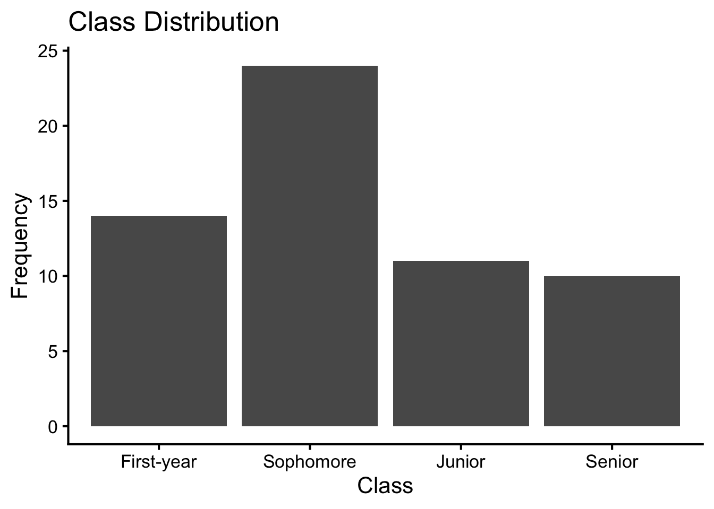
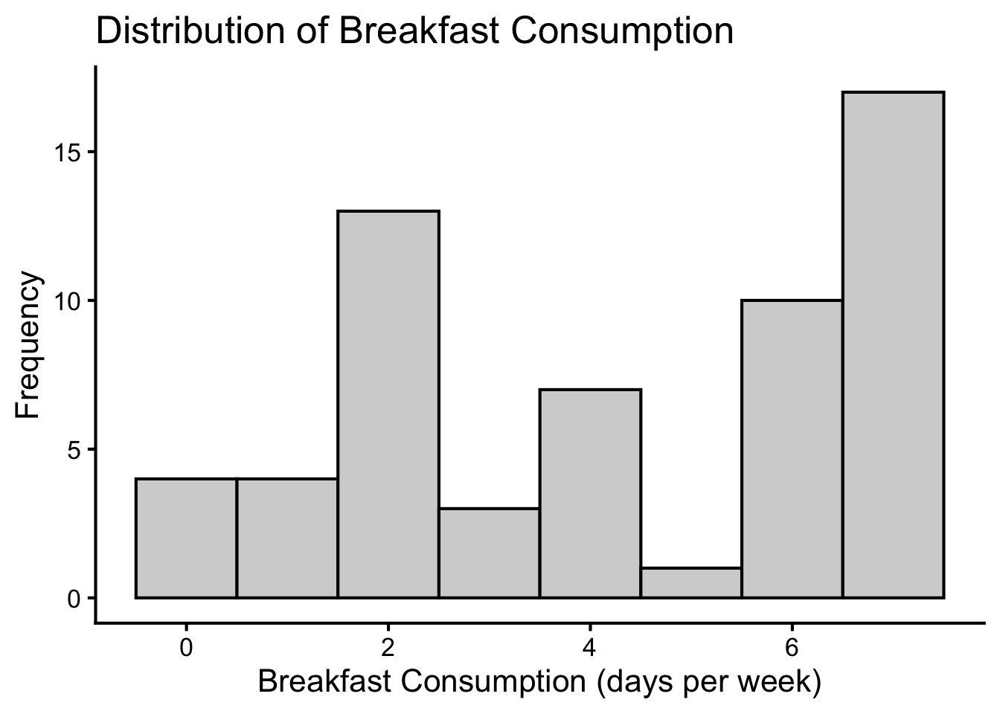
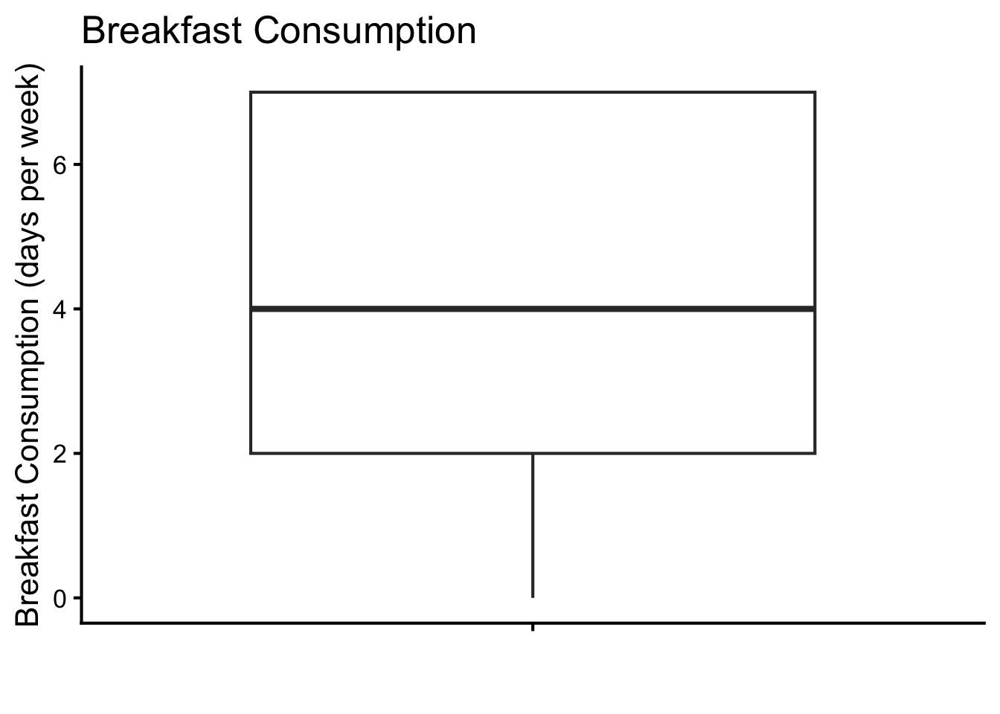
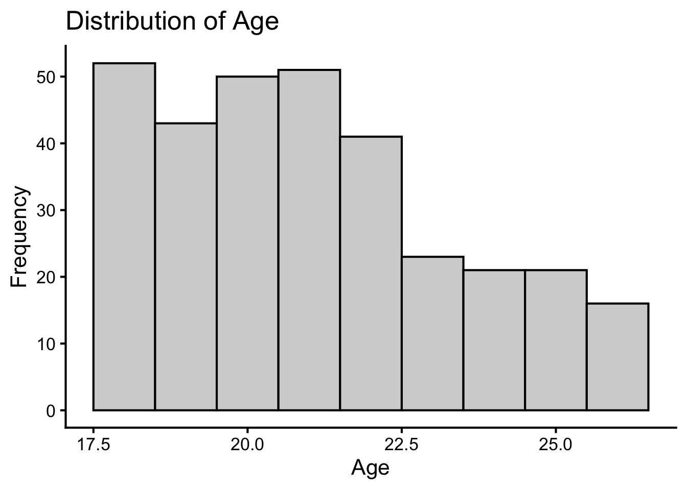

library(tidyverse) # for data wrangling and visualization
library(psych) # for describe() and scoreItems()
library(janitor) # for frequency and contingency tables
library(BrailleR) # for accessibility
GoBlind()df <- read_csv('data/sleep_breakfast.csv') %>%
as_tibble()1 Exercise 1
TipExercise 1: Ordinal data
- Convert the variable as factor with the correct order of levels.
- Create a frequency table.
- Create a bar chart.
- Summarize your findings in a few sentences, addressing the following questions:
- Any missing data? If so, how many observations are missing?
- Which level is the most common (called mode)? Which level is the least common?
df <- df %>%
mutate(
Class = factor(Class,
levels = c("First-year",
"Sophomore",
"Junior",
"Senior"),
ordered = TRUE),
)
df %>%
tabyl(Class) %>%
adorn_totals("row") %>%
adorn_pct_formatting(digits = 2) %>%
knitr::kable()| Class | n | percent |
|---|---|---|
| First-year | 14 | 23.73% |
| Sophomore | 24 | 40.68% |
| Junior | 11 | 18.64% |
| Senior | 10 | 16.95% |
| Total | 59 | 100.00% |
df %>%
ggplot(aes(x = Class)) +
geom_bar(stat = "count") +
labs(x = "Class", y = "Frequency") +
ggtitle("Class Distribution")
This chart has title 'Class Distribution'.
It has x-axis 'Class' with labels First-year, Sophomore, Junior and Senior.
It has y-axis 'Frequency' with labels 0, 5, 10, 15, 20 and 25.
The chart is a bar chart with 4 vertical bars.
Bar 1 is centered at 1, and length is from 0 to 14.
Bar 2 is centered at 2, and length is from 0 to 24.
Bar 3 is centered at 3, and length is from 0 to 11.
Bar 4 is centered at 4, and length is from 0 to 10.There is no missing data, and the most common class year is “Sophomore,” while the least common is “Senior.”
2 Exercise 2
TipExercise 2: Ratio data
- Check descriptive statistics.
- Create a histogram.
- Create a box plot.
- Summarize your findings in a few sentences, addressing the following questions:
- Are there any missing values in the variable? If so, how many observations are missing?
- What is the shape of the distribution of the variable?
- Is the distribution approximately normal (bell-shaped, symmetric around one peak)?
- If the distribution is skewed, which direction is the distribution skewed (positive or negative)?
- What is the central tendency of the variable?
- What is the spread of the variable?
df %>% select(BreakfastPerWeek) %>%
describe() %>%
round(3) %>%
select(n, mean, median, sd, range, min, max, skew, kurtosis) %>%
knitr::kable()| n | mean | median | sd | range | min | max | skew | kurtosis | |
|---|---|---|---|---|---|---|---|---|---|
| BreakfastPerWeek | 59 | 4.254 | 4 | 2.44 | 7 | 0 | 7 | -0.228 | -1.487 |
df %>% ggplot(aes(x = BreakfastPerWeek)) +
geom_histogram(binwidth = 1, color = "black", fill = "lightgray") +
labs(x = "Breakfast Consumption (days per week)", y = "Frequency") +
ggtitle("Distribution of Breakfast Consumption")
This chart has title 'Distribution of Breakfast Consumption'.
It has x-axis 'Breakfast Consumption (days per week)' with labels 0, 2, 4 and 6.
It has y-axis 'Frequency' with labels 0, 5, 10 and 15.
The chart is a bar chart with 8 vertical bars.
Bar 1 is centered at 0, and length is from 0 to 4.
Bar 2 is centered at 1, and length is from 0 to 4.
Bar 3 is centered at 2, and length is from 0 to 13.
Bar 4 is centered at 3, and length is from 0 to 3.
Bar 5 is centered at 4, and length is from 0 to 7.
Bar 6 is centered at 5, and length is from 0 to 1.
Bar 7 is centered at 6, and length is from 0 to 10.
Bar 8 is centered at 7, and length is from 0 to 17.
It has colour set to black.
It has fill set to purplish white.df %>% ggplot() +
geom_boxplot(aes(x="",
y=BreakfastPerWeek)) +
labs(y = "Breakfast Consumption (days per week)",
x = "") +
ggtitle("Breakfast Consumption")
This chart has title 'Breakfast Consumption'.
There is no x-axis.
It has y-axis 'Breakfast Consumption (days per week)' with labels 0, 2, 4 and 6.
The chart is a boxplot comprised of 1 vertical box with whiskers.
There is a box at x=1.
It has median 4. The box goes from 2 to 7, and the whiskers extend to 0 and 7.
There are 0 outliers for this boxplot.There are no missing variables. The distribution is not normally distributed, and there are multiple modes visible in the histogram (2 and 7), indicating a multimodal distribution. The mean (4.254) and median (4) are similar, and the range of the variable is 7, suggesting high variability in breakfast consumption among students.
3 Bonus Exercise
df <- read_csv('data/rses.csv') %>%
as_tibble()
df %>% select(Age, Gender) %>%
describe() %>%
round(3) %>%
select(n, mean, median, sd, range, min, max, skew, kurtosis) %>%
knitr::kable()| n | mean | median | sd | range | min | max | skew | kurtosis | |
|---|---|---|---|---|---|---|---|---|---|
| Age | 318 | 21.069 | 21 | 2.347 | 8 | 18 | 26 | 0.480 | -0.737 |
| Gender* | 318 | 1.176 | 1 | 0.382 | 1 | 1 | 2 | 1.693 | 0.868 |
df %>%
tabyl(Gender) %>%
adorn_totals("row") %>%
adorn_pct_formatting(digits = 2) %>%
knitr::kable()| Gender | n | percent |
|---|---|---|
| Female | 262 | 82.39% |
| Male | 56 | 17.61% |
| Total | 318 | 100.00% |
df %>% ggplot(aes(x = Gender)) +
geom_bar(color = "black", fill = "lightgray") +
labs(x = "Gender", y = "Frequency") +
ggtitle("Distribution of Gender")
This chart has title 'Distribution of Gender'.
It has x-axis 'Gender' with labels Female and Male.
It has y-axis 'Frequency' with labels 0, 100 and 200.
The chart is a bar chart with 2 vertical bars.
Bar 1 is centered at 1, and length is from 0 to 262.
Bar 2 is centered at 2, and length is from 0 to 56.
It has colour set to black.
It has fill set to purplish white.df %>% ggplot(aes(x = Age)) +
geom_histogram(binwidth = 1, color = "black", fill = "lightgray") +
labs(x = "Age", y = "Frequency") +
ggtitle("Distribution of Age")
This chart has title 'Distribution of Age'.
It has x-axis 'Age' with labels 17.5, 20.0, 22.5 and 25.0.
It has y-axis 'Frequency' with labels 0, 10, 20, 30, 40 and 50.
The chart is a bar chart with 9 vertical bars.
Bar 1 is centered at 18, and length is from 0 to 52.
Bar 2 is centered at 19, and length is from 0 to 43.
Bar 3 is centered at 20, and length is from 0 to 50.
Bar 4 is centered at 21, and length is from 0 to 51.
Bar 5 is centered at 22, and length is from 0 to 41.
Bar 6 is centered at 23, and length is from 0 to 23.
Bar 7 is centered at 24, and length is from 0 to 21.
Bar 8 is centered at 25, and length is from 0 to 21.
Bar 9 is centered at 26, and length is from 0 to 16.
It has colour set to black.
It has fill set to purplish white.